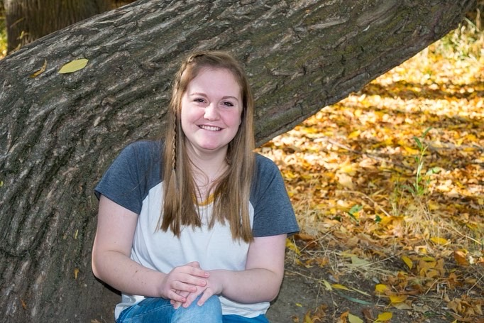

Sarah Dombroski | WDD 130
My name is Sarah. I like to read, watch tv, and dance. I really enjoy hanging out with my friends and family. Ice cream and cookie dough are my favorite treats, especially when they are together. I also really like pizza. I love being outdoors and going camping and hiking. I also enjoy doing mysteries and escape rooms. I am currently 18, and I have four semesters left of college.